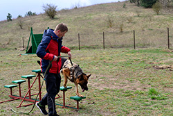

О передержке
Если Вам необходимо временно оставить своего любимого питомца, то это может быть непростым решением для Вас и для Вашего питомца? Вы хотите быть уверены в том, что Ваш четвероногий друг будет в безопасности и ухожен во время Вашего отсутствия? Именно поэтому я готов предложить Вам свою помощь в решении этой задачи. Во время отсутствия Ваш четвероногий друг будет окружён лаской и заботой, будет накормлен и ухожен. Кроме того, есть возможность обучить Вашего питомца нескольким командам из общего курса дрессировки или закрепить уже изученные. Если у Вашего питомца есть нежелательное поведение, то я могу помочь Вам откорректировать это поведение.
Не важно, едете ли Вы в отпуск, на срочную командировку или столкнулись с незапланированным ремонтом - я помогу Вам справиться с проблемой оставления питомца. Вы можете быть уверены, что Ваш четвероногий друг будет в безопасности и получит всю необходимую заботу во время Вашего отсутствия.
Мне 40 лет, и я занимаюсь кинологией с 2008 года. Моя любовь к этой профессии возникла после службы в пограничных войсках. В 2012 году я основал питомник немецких овчарок под названием «Эльзар из Эдель». Все мои собаки имеют различные степени ОКД и ЗКС.
{kind=link}
{kind=link}
Последних 7 лет занимаюсь дрессировкой собак и обучаю их владельцев правильному воспитанию своего питомца. В 2020 году совместно с владельцами собак, в нашем городе открыли площадка для выгула и дрессировки с множеством снарядов.
Веду активный образ жизни, профессия обязывает!!!!! Передержка для собак существует 2 года. Имеется 6 вольеров с выгулом и 5 вольеров домашнего содержания. Каждый оборудован замоком, который невозможно открыть изнутри. Выделены большие территории для выгуливания и игр ваших любимцев.